Ремонт генератораПроверить обмотку статора и ротора на обрыв можно, не снимая генератор с автомобиля. Для этого необходимо снять выпрямительный блок. Для выполнения работы потребуются: — трех-или двухзахватный съемник; самодельная оправка из набора чашечного съемника. Разборка 1. Снимаем генератор с автомобиля. 2. Снимаем регулятор напряжения. 3. Поддевая отверткой, извлекаем концы выводов обмоток статора из подпружиненных контактов выпрямительного блока. 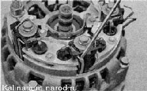
4. Накидным ключом на 8 мм отворачиваем три болта крепления выпрямительного блока (запомнив, как установлены изолирующие и упорные шайбы). 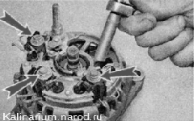 5. Ключом на 12 мм отворачиваем гайку контактного болта. 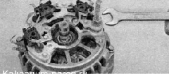
Проверить состояние выпрямительного блока и обмоток статора можно, не разбирая дальше генератор. Достаточно осторожно отогнуть выводы обмоток в стороны. Порядок проверки такой же, как показан ниже. 6. Снимаем выпрямительный блок. 7. Маркером наносим метки взаимного расположения передней и задней крышек генератора (для упрощения сборки). 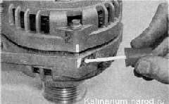8. Торцовым ключом на 8 мм отворачиваем четыре болта, стягиваюших переднюю и заднюю крышки генератора. 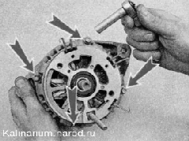9. Шлицевой отверткой осторожно раздвигаем крышки генератора. 10. Снимаем заднюю крышку, вынимаем из нее контактный болт (с надетой на него изолирующей шайбой) и пластмассовую втулку подшипника. 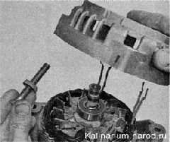Для определения технического состояния заднего подшипника покачайте из стороны в сторону и энергично повращайте его наружное кольцо. Подшипник не должен иметь значительный люфт, кольцо должно свободно враш,аться без заеданий и постороннего шума. Неисправный подшипник необходимо заменить. 11. Маркером наносим метки взаимного расположения статора и задней крышки. 12. Поддев отверткой, вынимаем статор из задней крышки генератора. 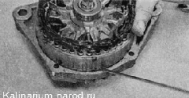 13. Для определения технического состояния переднего подшипника, удерживая рукой шкив, вращаем и покачиваем из стороны в сторону переднюю крышку. 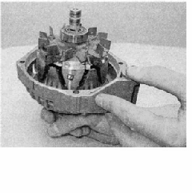 Завод-изготовитель не рекомендует менять передний подшипник ротора, так как подшипник завальцован в передней крышке генератора. Но, учитывая то, что стоимость подшипника значительно ниже стоимости новой передней крышки и, тем более, генератора в сборе, целесообразно выпрессовать и заменить неисправный подшипник. 14. При необходимости замены переднего подшипника генератора торцовым ключом на 24 мм отворачиваем гайку крепления шкива, удерживая шкив раздвижными пассатижами. 15. Снимаем с вала ротора шкив 3 с пружинной и плоской шайбами 2, дистанционную втулку 1. 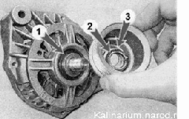
16. Ударами молотка с резиновым бойком выпрессовываем ротор из переднего подшипника (для этого наживляем крепления шкива на резьбу вала ротора заподлицо с торцом). 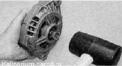17. При необходимости замены переднего подшипника генератора устанавливаем переднюю крышку в тиски. 18. Подобрав подходящие оправки из набора чашечного съемника, выпрессовываем подшипник из посадочного отверстия передней крышки. 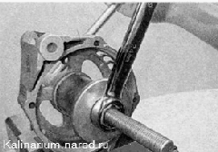
19. Закрепив ротор в тисках с мягкими накладками на губках, при помощи универсального съемника подходящего размера спрессовываем задний подшипник с вала ротора. 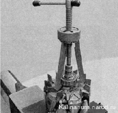Проверка 1. Прикладывая шупы омметра к контактным кольцам ротора, проверяем обмотку возбуждения на отсутствие обрыва. Сопротивление исправной обмотки возбуждения должно быть 5—10 Ом. 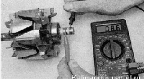 2. Подсоединяя шупы омметра к любому контактному кольцу и к ротору, проверяем обмотку возбуждения на отсутствие замыкания на «массу». При исправной обмотке ротора омметр должен показывать бесконечно большое сопротивление. 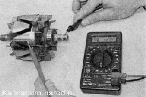 3. Поочередно подсоединяя щупы омметра к выводам обмотки статора, проверяем обмотки статора на отсутствие обрыва. При отсутствии обрыва омметр будет показывать маленькое электрическое сопротивление. 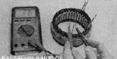4. Подсоединив щупы омметра к любому выводу обмотки и к статору, проверяем обмотку статора на отсутствие замыкания на «массу». Если короткого замыкания нет, то омметр должен показать бесконечно большое сопротивление. 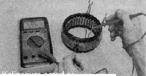Неисправные ротор и статор заменяем. Исправный полупроводниковый диод проводит электрический ток только в одном направлении. Если диод не проводит ток или проводит ток в обоих направлениях, значит, он неисправен. 5. Подсоединяем щуп отрицательного вывода омметра к выводу диода, а щуп положительного вывода- к корпусу проверяемого диода (или к пластине, в которую он запрессован). Исправный диод не должен пропускать ток (сопротивление стремится к бесконечности). 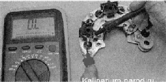6. Меняем шупы тестера местами. Если диод исправен, омметр должен показать электрическое сопротивление. 7. Аналогично проверяем другие диоды выпрямительного блока. 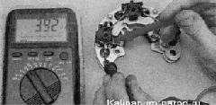 Сборка Перед запрессовкой подшипника в переднюю крышку генератора необходимо проверить посадочное гнездо подшипника и при необходимости ножом или шабером восстановить фаску там, где кромки отверстия остались замятыми. При запрессовке переднего подшипника в крышку усилие необходимо прикладывать только к наружному кольцу подшипника. 1. Подобрав подходящие оправки из набора чашечного съемника, запрессовываем новый подшипник в переднюю крышку генератора до упора. 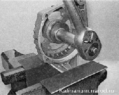
2. Нанося легкие удары молотком через выколотку, восстанавливаем завальцовку подшипника в крышке. 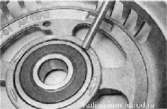
3. При помощи трубки подходящего диаметра (можно использовать глубокую головку на 19 мм) до упора напрессовываем задний подшипник на вал ротора. Перед установкой заднего подшипника генератора убедитесь, что вал надежно закреплен в тисках. Под вал ротора подложите деревянный брусок подходящего размера, чтобы при запрессовке не повредить переднюю крыльчатку ротора. Во избежание повреждения подшипника удары следует наносить только по внутреннему кольцу подшипника. 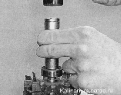Дальнейшую сборку генератора выполняем в последовательности, обратной разборке. При этом совмещаем метки, нанесенные на крышки и статор генератора. Окончательно затягиваем стяжные болты равномерно, крест-накрест, в несколько приемов по пол-оборота. Затянув болты, убеждаемся в легком вращении ротора (заедание ротора может быть вызвано перекосом крышек). Перед установкой пластмассового кожуха убеждаемся в надежном креплении выводов обмоток статора. |